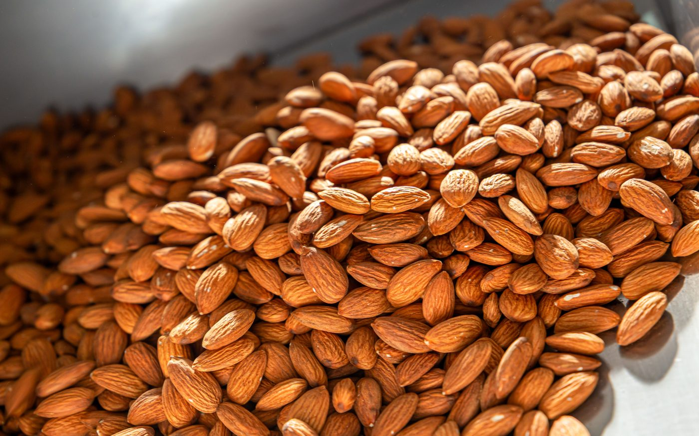
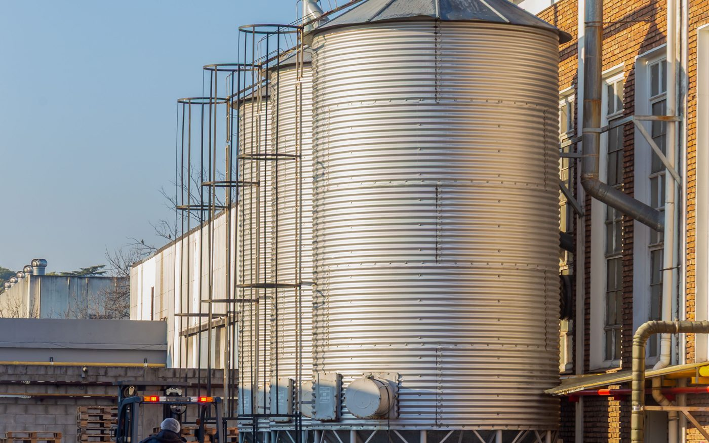
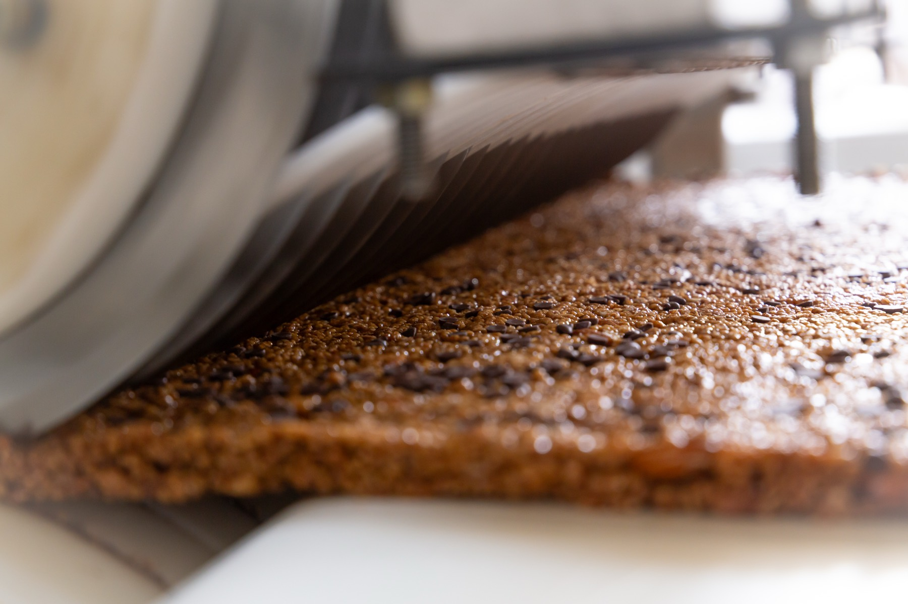
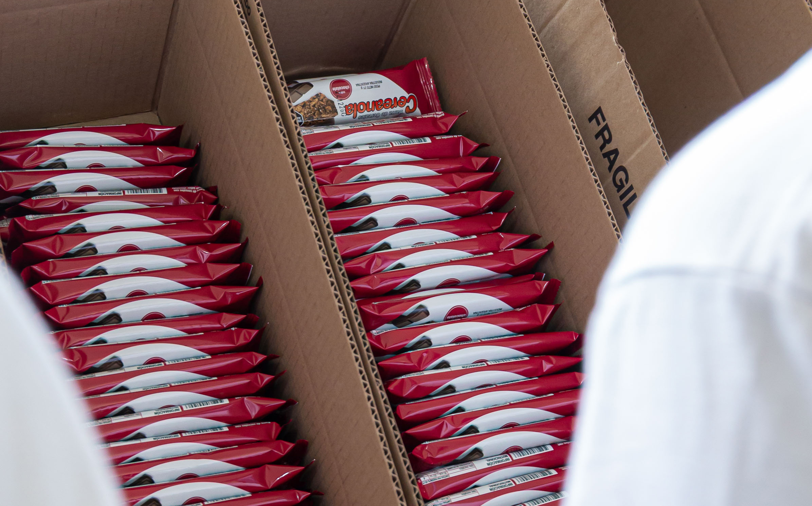
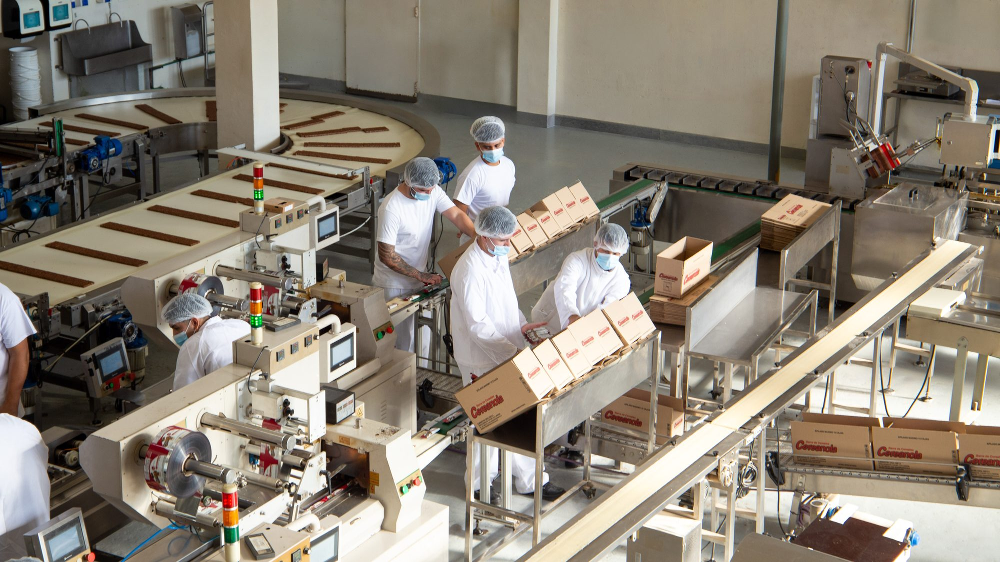

Qué fabricamos
Partimos de una base de cereales y adaptamos la fórmula a lo que necesite cada marca.
Cómo lo hacemos
Recepción de materia prima
Recibimos granos, frutas deshidratadas y frutos secos de proveedores seleccionados, con control de calidad en la entrada.
Cada partida se controla apenas entra a la planta: verificamos que la materia prima cumpla con nuestras especificaciones antes de aceptarla. Así la trazabilidad arranca desde el primer paso.

Almacenamiento en silos
Los granos (como arroz, maíz y trigo) se almacenan en silos propios dentro de la planta.
Contar con silos propios nos permite manejar nuestro stock de grano y no depender de entregas de terceros. El grano se conserva en condiciones controladas hasta el momento de procesarlo.

Elaboración de los cereales
Limpiamos, molemos y procesamos el grano para elaborar nosotros mismos los cereales que van a cada barra, recién hechos para cada producción.
Acá está lo que casi nadie hace: en lugar de comprar el cereal ya elaborado, lo producimos nosotros a partir del grano. Eso nos deja controlar el ingrediente principal desde el origen y ajustar cada cereal al perfil de la barra.
Formado de la barra
Ocurre en una línea continua de un metro de ancho, el motor de nuestra producción.
Sobre la línea continua se arma la lámina de barra: se integran los cereales, el ligante y las inclusiones —chips, frutas, frutos secos—, se prensa al espesor definido y se corta a la medida de cada formato. Es la etapa que define la textura final.

Envasado
Cierra con una línea automática de cuatro envasadoras trabajando en línea, que incluye envasado vertical propio.
Las cuatro envasadoras trabajan en línea con el packaging de cada marca. El envasado vertical propio nos da capacidad y flexibilidad para distintos formatos, manteniendo el ritmo de producción y el control de peso pieza por pieza.


En qué nos diferenciamos
Planta propia, 3.100 m²
Silos propios, línea continua de un metro y cuatro envasadoras. Integrar toda la producción bajo un mismo techo nos da capacidad real y control de cada etapa.
Calidad auditada
RNE y RNPA vigentes y sistema FSSC 22000. Controlamos y damos trazabilidad lote por lote, desde la materia prima hasta el producto terminado.
Hasta dónde llega nuestro servicio
Tu idea o receta
Entendemos qué buscás: perfil, público, canal y volúmenes.
Fórmula y muestras
Desarrollamos la fórmula y enviamos muestras hasta el sabor y la textura exactos.
Rótulo y habilitaciones
Te asesoramos con el rótulo y la normativa, y gestionamos las habilitaciones del producto.
Producción en planta
Una vez aprobado todo, producimos el lote con nuestra capacidad industrial.
Acompañamiento
Producimos lote tras lote con la misma calidad y te acompañamos en el crecimiento.
Dos formas de empezar
Con una fórmula ya desarrollada
Elegís entre nuestras fórmulas ya probadas y las producimos con tu marca. El camino más rápido para salir a la venta. Volumen mínimo: un pallet.
Ver el catálogoCon un producto a medida
Desarrollamos una fórmula exclusiva para tu marca, desde cero o partiendo de una receta que ya tenés.
Pedí tu presupuestoPreguntas frecuentes
El mínimo es un pallet. Contanos tu volumen estimado y te confirmamos cómo encaja con nuestra operación.
Sí. Desarrollamos la fórmula desde cero o partimos de una receta que ya tengas, y la ajustamos hasta el punto exacto que buscás.
Sí. Antes de cada producción enviamos una muestra para tu aprobación, y esa validación queda como referencia de los lotes siguientes.
Contamos con RNE y RNPA vigentes, habilitación bromatológica y un sistema de gestión de inocuidad alimentaria basado en la norma FSSC 22000.
Sí. Te asesoramos con el rótulo y la normativa, y gestionamos las habilitaciones del producto.
No. El arte, el film y la caja los entregás vos, ya diseñados, y nosotros envasamos con ellos.
No. La distribución y la negociación con los puntos de venta quedan del lado de cada marca.